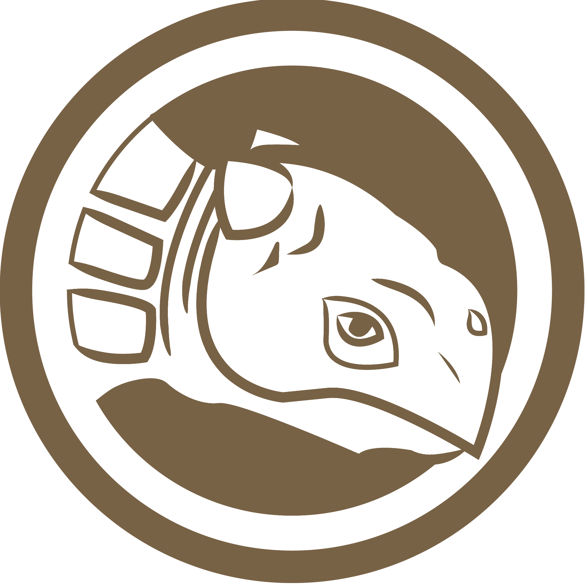
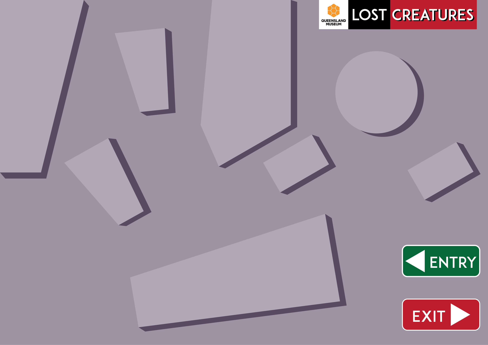

RESET
HOW TO USE THE INTERACTIVE MAP
1. Follow the the map to find the fossil.
2. Collect the dinosaur card.
3. Click the dinosaur icon to move on to the next adventure.
Note: press reset button to redo the step !

